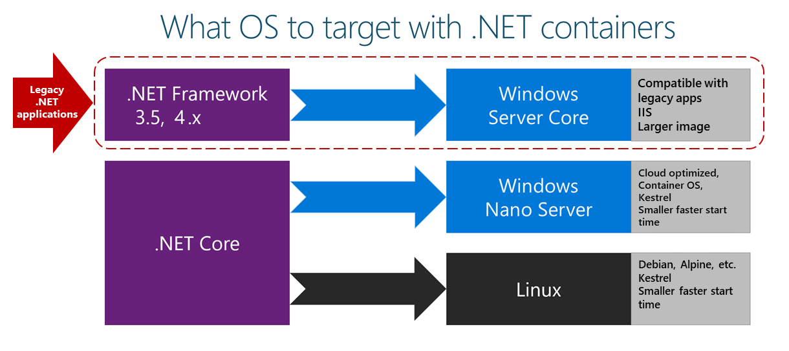
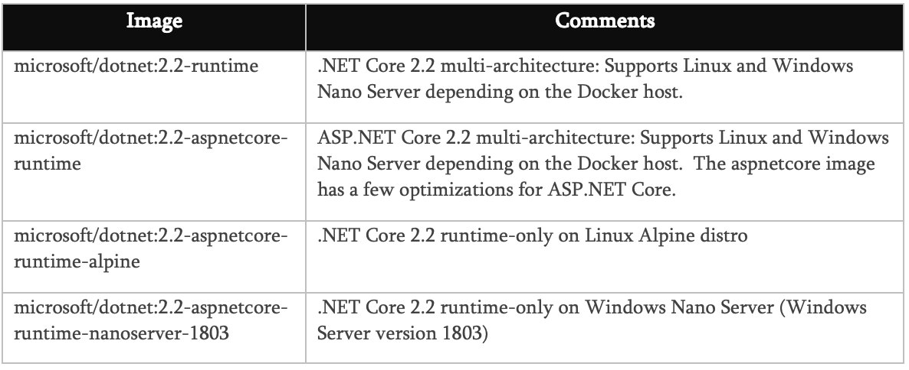
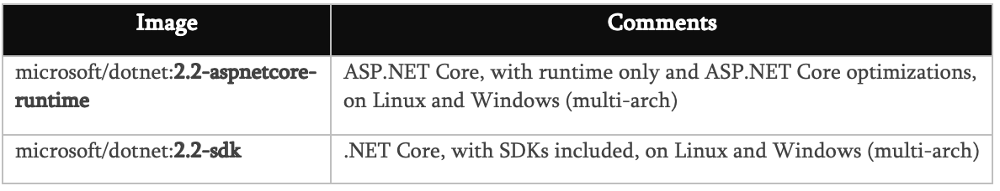

Choosing Between .NET Core and .NET Framework for Docker Containers
There are two supported frameworks for building server-side containerized Docker applications with .NET: .NET Framework and .NET Core. They share many .NET platform components, and you can share code across the two. However, there are fundamental differences between them, and which framework you use will depend on what you want to accomplish. This section provides guidance on when to choose each framework.
This section provides a summary of when to choose .NET Core or .NET Framework. We provide more details about these choices in the sections that follow.
You should use .NET Core, with Linux or Windows Containers, for your containerized Docker server application when:
In short, when you create new containerized .NET applications, you should consider .NET Core as the default choice. It has many benefits and fits best with the containers philosophy and style of working.
An additional benefit of using .NET Core is that you can run side by side .NET versions for applications within the same machine. This benefit is more important for servers or VMs that do not use containers, because containers isolate the versions of .NET that the app needs. (As long as they are compatible with the underlying OS.)
You should use .NET Framework for your containerized Docker server application when:
Using .NET Framework on Docker can improve your deployment experiences by minimizing deployment issues. This “lift and shift” scenario is important for containerizing legacy applications that were originally developed with the traditional .NET Framework, like ASP.NET WebForms, MVC web apps or WCF (Windows Communication Foundation) services.
The modularity and lightweight nature of .NET Core makes it perfect for containers. When you deploy and start a container, its image is far smaller with .NET Core than with .NET Framework. In contrast, to use .NET Framework for a container, you must base your image on the Windows Server Core image, which is a lot heavier than the Windows Nano Server or Linux images that you use for .NET Core.
Additionally, .NET Core is cross-platform, so you can deploy server apps with Linux or Windows container images. However, if you are using the traditional .NET Framework, you can only deploy images based on Windows Server Core.
The following is a more detailed explanation of why to choose .NET Core.
Clearly, if your goal is to have an application (web app or service) that can run on multiple platforms supported by Docker (Linux and Windows), the right choice is .NET Core, because .NET Framework only supports Windows.
.NET Core also supports macOS as a development platform. However, when you deploy containers to a Docker host, that host must (currently) be based on Linux or Windows. For example, in a development environment, you could use a Linux VM running on a Mac.
Visual Studio provides an integrated development environment (IDE) for Windows and supports Docker development.
Visual Studio for Mac is an IDE, evolution of Xamarin Studio, that runs on macOS and supports Docker-based application development. This should be the preferred choice for developers working in Mac machines who also want to use a powerful IDE.
You can also use Visual Studio Code (VS Code) on macOS, Linux, and Windows. VS Code fully supports .NET Core, including IntelliSense and debugging. Because VS Code is a lightweight editor, you can use it to develop containerized apps on the Mac in conjunction with the Docker CLI and the .NET Core command-line interface (CLI). You can also target .NET Core with most third-party editors like Sublime, Emacs, vi, and the open-source OmniSharp project, which also provides IntelliSense support.
In addition to the IDEs and editors, you can use the .NET Core CLI tools for all supported platforms.
Containers are commonly used in conjunction with a microservices architecture, although they can also be used to containerize web apps or services that follow any architectural pattern. You can use .NET Framework on Windows Containers, but the modularity and lightweight nature of .NET Core makes it perfect for containers and microservices architectures. When you create and deploy a container, its image is far smaller with .NET Core than with .NET Framework.
You could use the traditional .NET Framework for building microservices-based applications (without containers) by using plain processes. That way, because the .NET Framework is already installed and shared across processes, processes are light and fast to start. However, if you are using containers, the image for the traditional .NET Framework is also based on Windows Server Core and that makes it too heavy for a microservices-on-containers approach.
In contrast, .NET Core is the best candidate if you are embracing a microservices-oriented system that is based on containers, because .NET Core is lightweight. In addition, its related container images, either the Linux image or the Windows Nano image, are lean and small making containers light and fast to start.
A microservice is meant to be as small as possible: to be light when spinning up, to have a small footprint, to have a small Bounded Context (check DDD, Domain-Driven Design), to represent a small area of concerns, and to be able to start and stop fast. For those requirements, you will want to use small and fast-to-instantiate container images like the .NET Core container image.
A microservices architecture also allows you to mix technologies across a service boundary. This enables a gradual migration to .NET Core for new microservices that work in conjunction with other microservices or with services developed with Node.js, Python, Java, GoLang, or other technologies.
When your container-based system needs the best possible density, granularity, and performance, .NET Core and ASP.NET Core are your best options. ASP.NET Core is up to ten times faster than ASP.NET in the traditional .NET Framework, and it leads other popular industry technologies for microservices, such as Java servlets, Go, and Node.js.
This is especially relevant for microservices architectures, where you could have hundreds of microservices (containers) running. With ASP.NET Core images (based on the .NET Core runtime) on Linux or Windows Nano, you can run your system with a much lower number of servers or VMs, ultimately saving costs in infrastructure and hosting.
While .NET Core offers significant benefits for new applications and application patterns, .NET Framework will continue to be a good choice for many existing scenarios.
You might want to use Docker containers just to simplify deployment, even if you are not creating microservices. For example, perhaps you want to improve your DevOps workflow with Docker—containers can give you better isolated test environments and can also eliminate deployment issues caused by missing dependencies when you move to a production environment. In cases like these, even if you are deploying a monolithic application, it makes sense to use Docker and Windows Containers for your current .NET Framework applications.
In most cases for this scenario, you will not need to migrate your existing applications to .NET Core; you can use Docker containers that include the traditional .NET Framework. However, a recommended approach is to use .NET Core as you extend an existing application, such as writing a new service in ASP.NET Core.
Third-party libraries are quickly embracing the .NET Standard, which enables code sharing across all .NET flavors, including .NET Core. With the .NET Standard Library 2.0 and beyond the API surface compatibility across different frameworks has become significantly larger and in .NET Core 2.x applications can also directly reference existing .NET Framework libraries (see compat shim).
In addition, the Windows Compatibility Pack was released on NOV-2017 to extend the API surface available for .NET Standard 2.0 on Windows. This pack allows recompiling most existing code to .NET Standard 2.x with little or no modification, to run on Windows.
However, even with that exceptional progression since .NET Standard 2.0 and .NET Core 2.1, there might be cases where certain NuGet packages need Windows to run and might not support .NET Core. If those packages are critical for your application, then you will need to use .NET Framework on Windows Containers.
Some .NET Framework technologies are not available in the current version of .NET Core (version 2.2 as of this writing). Some of them will be available in later .NET Core releases (.NET Core 2.x), but others do not apply to the new application patterns targeted by .NET Core and might never be available.
The following list shows most of the technologies that are not available in .NET Core 2.x:
In addition to the technologies listed in the official .NET Core roadmap, other features might be ported to .NET Core. For a full list, look at the items tagged as port-to-core on the CoreFX GitHub site. Note that this list does not represent a commitment from Microsoft to bring those components to .NET Core — the items simply capture requests from the community. If you care about any of the components listed above, consider participating in the discussions on GitHub so that your voice can be heard. And if you think something is missing, please file a new issue in the CoreFX repository.
Even though .NET Core 3 (at the time of this writing this is in the works) will include support for a lot of existing .NET Framework APIs, these are desktop oriented so, currently, they are of no use in the container world.
Some Microsoft or third-party platforms do not support .NET Core. For example, some Azure services provide an SDK that is not yet available for consumption on .NET Core. This is temporary, because all Azure services will eventually use .NET Core. For example, the Azure DocumentDB SDK for .NET Core was released as a preview on November 16, 2016, but it is now generally available (GA) as a stable version.
In the meantime, if any platform or service in Azure still doesn’t support .NET Core with its client API, you can use the equivalent REST API from the Azure service or the client SDK on .NET Framework.
The following decision table summarizes whether to use .NET Framework or .NET Core. Remember that for Linux containers, you need Linux-based Docker hosts (VMs or servers) and that for Windows Containers you need Windows Server based Docker hosts (VMs or servers).
IMPORTANT: Your development machines will run one Docker host, either Linux or Windows. Related microservices that you want to run and test together in one solution will all need to run on the same container platform.
Given the diversity of operating systems supported by Docker and the differences between .NET Framework and .NET Core, you should target a specific OS and specific versions depending on the framework you are using.
For Windows, you can use Windows Server Core or Windows Nano Server. These Windows versions provide different characteristics (IIS in Windows Server Core versus a self-hosted web server like Kestrel in Nano Server) that might be needed by .NET Framework or .NET Core, respectively.
For Linux, multiple distros are available and supported in official .NET Docker images (like Debian).
In Figure 3-1 you can see the possible OS version depending on the .NET framework used.

Figure 3-1. Operating systems to target depending on versions of the .NET framework
You can also create your own Docker image in cases where you want to use a different Linux distro or where you want an image with versions not provided by Microsoft. For example, you might create an image with ASP.NET Core running on the traditional .NET Framework and Windows Server Core, which is a not-so-common scenario for Docker.
When you add the image name to your Dockerfile file, you can select the operating system and version depending on the tag you use, as in the following examples:
The Official .NET Docker images are Docker images created and optimized by Microsoft. They are publicly available in the Microsoft repositories on Docker Hub. Each repository can contain multiple images, depending on .NET versions, and depending on the OS and versions (Linux Debian, Linux Alpine, Windows Nano Server, Windows Server Core, etc.).
Since .NET Core 2.1, all the .NET Core images, including for ASP.NET Core are available at Docker Hub at the .NET Core image repo: https://hub.docker.com/r/microsoft/dotnet/
Most image repos provide extensive tagging to help you select not just a specific framework version, but also to choose an OS (Linux distro or Windows version).
When building Docker images for developers, Microsoft focused on the following main scenarios:
Why multiple images? When developing, building, and running containerized applications, you usually have different priorities. By providing different images for these separate tasks, Microsoft helps optimize the separate processes of developing, building, and deploying apps.
During development, what is important is how fast you can iterate changes, and the ability to debug the changes. The size of the image is not as important as the ability to make changes to your code and see the changes quickly. Some tools and “build-agent containers”, use the development .NET Core image (microsoft/dotnet:2.2-sdk) during development and build proces. When building inside a Docker container, the important aspects are the elements that are needed in order to compile your app. This includes the compiler and any other .NET dependencies.
Why is this type of build image important? You do not deploy this image to production. Instead, it is an image you use to build the content you place into a production image. This image would be used in your continuous integration (CI) environment or build environment when using Docker Multi-stage builds.
What is important in production is how fast you can deploy and start your containers based on a production .NET Core image. Therefore, the runtime-only image based on microsoft/dotnet:2.2-aspnetcore-runtime is small so that it can travel quickly across the network from your Docker registry to your Docker hosts. The contents are ready to run, enabling the fastest time from starting the container to processing results. In the Docker model, there is no need for compilation from C# code, as there is when you run dotnet build or dotnet publish when using the build container.
In this optimized image you put only the binaries and other content needed to run the application. For example, the content created by dotnet publish contains only the compiled .NET binaries, images, .js, and .css files. Over time, you will see images that contain pre-jitted (the compilation from IL to native that occurs at runtime) packages.
Although there are multiple versions of the .NET Core and ASP.NET Core images, they all share one or more layers, including the base layer. Therefore, the amount of disk space needed to store an image is small; it consists only of the delta between your custom image and its base image. The result is that it is quick to pull the image from your registry.
When you explore the .NET image repositories at Docker Hub, you will find multiple image versions classified or marked with tags. These tags help to decide which one to use, depending on the version you need, like those in the following table: